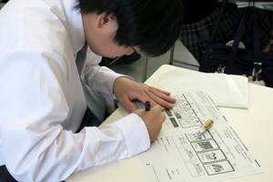

スマホ・ネット安全教室
1年生が、情報技術の便利な使い方と、ネット上で起こるリスクの両方を学びました。
NTTドコモの講師を迎え、身近なスマートフォンを題材に、情報を発信するときの判断とトラブルを避ける工夫を確認しました。情報コースで技術を学ぶうえでも、安全に扱う視点はすべての制作と通信の土台になります。

活動の記録
NTTドコモの講師を迎え、身近なスマートフォンを題材に、情報を発信するときの判断とトラブルを避ける工夫を確認しました。情報コースで技術を学ぶうえでも、安全に扱う視点はすべての制作と通信の土台になります。
環境を整えた理由
「スマホ・ネット安全教室」は、授業と制作を続けるための環境整備の記録です。
機器や通信を新しくしたことを、実際の授業内容と結びつけて掲載しています。
使う授業
文書、表計算、プログラム、画像、3Dでは必要な性能が異なります。
更新した環境を、処理と表現の両分野で使います。
情報コースの学びへ
学習環境を、授業の次へつなぐ
機器や通信手段は、置くだけでは授業になりません。説明を見る、各自で操作する、結果を共有する、困った箇所を直すという学習の流れを支えるために使います。